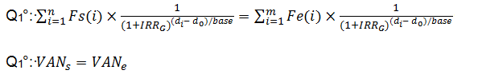

IRR Calculation Principles.
The Internal Rate of Return (IRR) materializes the rate of return generated for all uses of an authorization envelope implementation (financial headings and headings accessories) , that is to say, the return flow income and return of capital that was made available to the client. This is called Global IRR(IRRG ) . It is calculated such that the present value (NPV) at the rate of outflow ( disbursement of capital) inflows ( principal and income attached ) equalizes . That is to solve the folowing equation Q1:

- with:
- IRRG = overall internal rate of return
- Fs (i) = net amount in currency of the outgoing stream No. i
- n = number of outflows
- Fe (i) = net amount in currency of the incoming stream No. i
- m = number of inflows
- di = the date of the incoming or outgoing stream No. i
- d0 = the departure date of the measure: date of signing the contract.
- base = reference period TRIG expression in rates , the year in days . The value is set to 365 or 366 by year of di .
- VANs = Present Value Net outflows
- Vane = Present Value Net inflows
Solving the equation Q1
Resolution Q1 is only feasible by a possible value of iteration IRRG in this equation. In order to achieve a result and limit the number of test, it is necessary to introduce the following concepts:
- Margin of error : ε
- IRRG Lower Bound: LORRG
- IRRG Upper Bound: UPIRRG
Margin of Error
It defines the accuracy in which the calculation is performed in the Q1 equation.
- It is defined by the following relationship:
- |VANs| - |VANe |
IRRG Lower and upper Bound
The objective of these two terminals is to frame the IRRG value to rapidly converge to the result. The longer the interval between LOIRRG and UPIRRG is low with LOIRRG ≤ IRRG ≤ UPIRRG the more convergence will be fast . It is therefore necessary to fix the two terminals by the most appropriate values. The research by dichotomy IRRG optimizes the resolution of the equation.
IRR Calculation Schema Design
IIR calculations go through the collection of different types of flows. The nature of the stream sets the inbound or outbound direction of the latter. Outflows are by definition disbursements and Inflows are attached repayments and income. Each flow belongs by nature to an allocation represented by the following concepts:
- expenditure
- bills
- Accessories items
- Financial headings
- Bonus flows
- PEE flow
In MongoDB we need a collection which contains all flows, so let call this collections flows. We need also an IRR definition collection which contains IRR Name and Allocations. As each IRR definition will contain its allocations, it can be calculated by allocation and we easily see dependencies between IRR Definitions which can be represented as a Tree, for that we just need an ancesstor field into IRR definition collection.
Consider the following document that captures sample of IRR definition:
Application Object Model
Pre-requisites
Please make sure all applications listed bellow are up-and-running on your machine, if not please feel free to get it from the correspondent editor website. The application object model will be:
public class IRRDefinition
{
[BsonRepresentation(BsonType.ObjectId)]
public ObjectId Id { get; set; }
public string Name { get; set; }
public string Description { get; set; }
public List<Allocation> Allocations { get; set; }
public List<ObjectId> Ancestors { get; set; }
public IRRDefinition()
{
Allocations = new List<Allocation>();
Ancestors = new List<ObjectId>();
}
}
public class Flow
{
[BsonRepresentation(BsonType.ObjectId)]
public ObjectId Id { get; set; }
public string Type { get; set; }
public DateTime Date { get; set; }
public string Direction { get; set; }
public String Allocation { get; set; }
public Double Value { get; set; }
}
public class Allocation
{
[BsonRepresentation(BsonType.ObjectId)]
public ObjectId Id { get; set; }
public string Name { get; set; }
public string Description { get; set; }
}We need to define a Data Context Object to interact with MongoDB:
public class IRRContext
{
public const string CONNECTION_STRING_NAME = "IRR";
public const string DATABASE_NAME = "irr";
public const string IRRDEFINITIONS_COLLECTION_NAME = "irrdefinitions";
public const string FLOWS_COLLECTION_NAME = "flows";
// This is ok... Normally, they would be put into
// an IoC container.
private static readonly IMongoClient _client;
private static readonly IMongoDatabase _database;
static IRRContext()
{
var connectionString = ConfigurationManager.ConnectionStrings[CONNECTION_STRING_NAME].ConnectionString;
_client = new MongoClient(connectionString);
_database = _client.GetDatabase(DATABASE_NAME);
}
public IMongoClient Client
{
get { return _client; }
}
public IMongoCollection<IRRDefinition> IRRDefinitions
{
get { return _database.GetCollection<IRRDefinition>(IRRDEFINITIONS_COLLECTION_NAME); }
}
public IMongoCollection<Flow> Flows
{
get { return _database.GetCollection<Flow>(FLOWS_COLLECTION_NAME); }
}
}
Source code is availlable on the repository for more informations, We will just be focused on interacting with MongoDb using MongoDb Driver.
using MongoDB.Bson;
using MongoDB.Bson.Serialization.Attributes;
using MongoDB.Driver;Connection String for mongodb database
<connectionStrings>
<add name="irr" connectionString="mongodb://localhost:27017" />
</connectionStrings>CRUD Operations using MongoDB.Net Driver
For this solution, I used: Visual studio Community 2015 Download MongoDB 3.0
For more reading about MongoDB .net Driver please visit :[C# and .NET MongoDB Driver]http://docs.mongodb.org/ecosystem/drivers/csharp/)
If you prefer to not use the automatic generator, push a branch named gh-pages to your repository to create a page manually. In addition to supporting regular HTML content, GitHub Pages support Jekyll, a simple, blog aware static site generator. Jekyll makes it easy to create site-wide headers and footers without having to copy them across every page. It also offers intelligent blog support and other advanced templating features.
Authors and Contributors
You can @mention a GitHub username to generate a link to their profile. The resulting <a> element will link to the contributor’s GitHub Profile. For example: In 2007, Chris Wanstrath (@defunkt), PJ Hyett (@pjhyett), and Tom Preston-Werner (@mojombo) founded GitHub.
Support or Contact
Having trouble with Pages? Check out our documentation or contact support and we’ll help you sort it out.